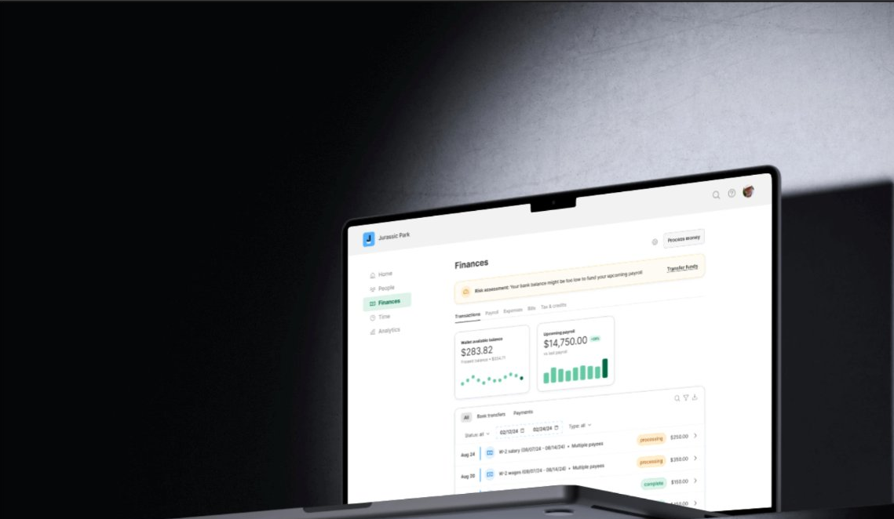
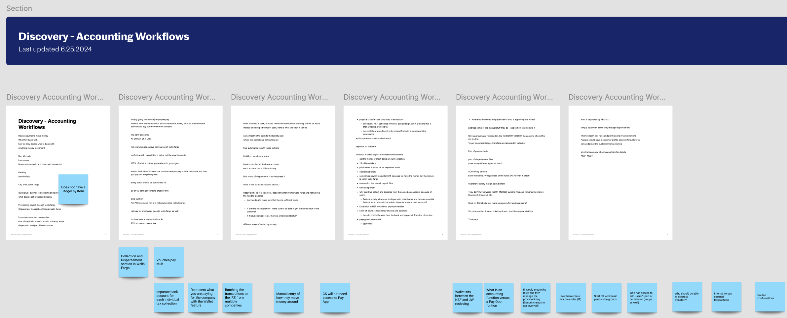
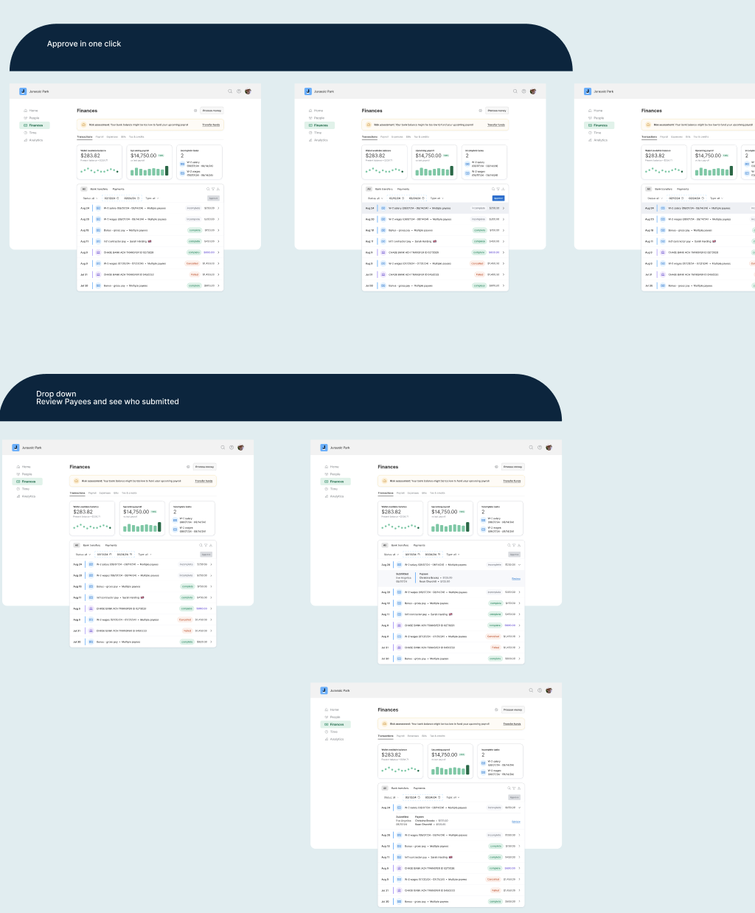

Complete overhaul of the New Payments Experience for external customers to make the product more user-friendly, with the addition of a new feature.
The Justworks Payments experience lagged behind competitors, requiring users to navigate multiple areas of the platform to complete payments and leaving many feeling overwhelmed. The redesign focused on creating a more intuitive experience that enabled users to complete payments with confidence.
Explore solutions through cross-functional design workshops to address key user needs within the Payments system. These collaborative sessions encouraged teams to build on each other's ideas, resulting in a wide range of innovative design solutions.
This overhaul utilized an iterative, human-centered design methodology that emphasized continuous discovery, cross-functional collaboration, and rapid validation to evolve the Payments experience.
The discovery phase began by translating research and insights from BizOps into actionable design opportunities. These findings helped our team identify the highest-impact pain points within the existing Payments experience and establish a clear direction for exploration. To rapidly generate ideas, we participated in collaborative design workshops where each designer sketched solutions independently against the clock before sharing them with the group. Building on one another's concepts led to stronger ideas than any one person could have developed alone, uncovering new approaches to simplifying the payment experience. We then consolidated our explorations in FigJam, using information architecture and site mapping to connect concepts into a cohesive end-to-end system, ultimately revealing additional features and opportunities that expanded the scope of the redesign.

Partnering closely with BizOps allowed our team to translate customer feedback into actionable design opportunities. Their findings revealed that administrators were forced to navigate between invoices, the Payments Center, and employee pages to understand the status of a payment, creating a fragmented and overwhelming experience. These insights became the foundation for re-architecting the Payments experience into a more intuitive, centralized workflow.
To explore the redesign, our team conducted collaborative wireframing workshops where designers independently sketched solutions within timed sessions. Reviewing these explorations together helped us identify recurring patterns, challenge assumptions, and combine the strongest ideas into a cohesive user flow.
After independently exploring solutions, we brought our work together in FigJam to compare approaches and align on a unified direction. Organizing concepts through information architecture and user flow mapping allowed us to refine the experience, validate key interactions, and identify additional features that strengthened the overall Payments system.
High-fidelity prototypes were shared with stakeholders across BizOps, Product, Engineering, and Design to validate the proposed experience and collect iterative feedback. Throughout the redesign, regular check-ins ensured customer insights, business requirements, and technical constraints were incorporated into the evolving solution, resulting in a scalable and cohesive Payments experience.
An administrator needs to issue a one-time bonus payment to several employees before the next payroll cycle. Rather than jumping between invoices, the Payments Center, and employee profiles, they can complete the entire workflow from a unified experience while reviewing payment details, scheduling processing dates, and confirming the payment before submission.

This redesign established a more intuitive and scalable foundation for the Justworks Payments experience by centralizing payment creation and reducing friction for administrators. Given more time, I would continue modernizing the remaining payment flows and extend the experience to mobile.
This project strengthened my ability to navigate ambiguity and rapidly iterate within a fast-paced product environment, and deepened my understanding of systems thinking across a cross-functional org.
"Whimsy is the magic that turns the ordinary into the extraordinary."